Alles wat er die dag en nacht gebeurde. Gedocumenteerd. Voor de geschiedenis. Voor Nouelle.
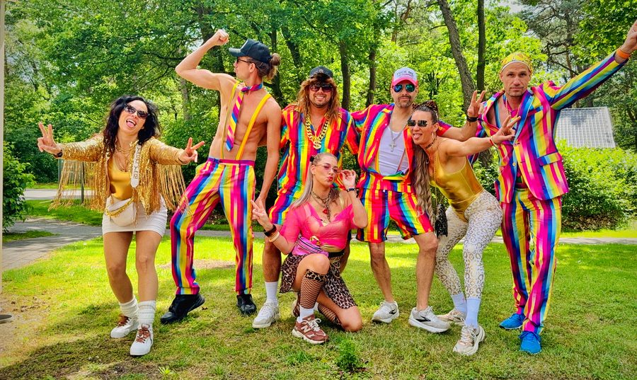
De crew klaar voor vertrek naar Kamping Kitsch.
Regenboogpakken, goud, poses. Ergens hier begint de dag die Nouelle nooit vergeet.
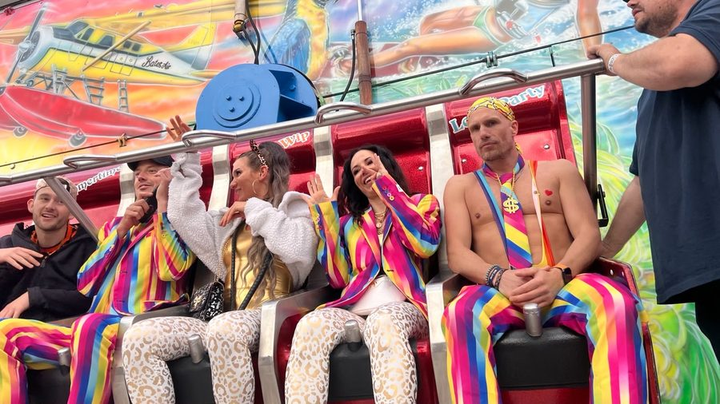
Op de attractie. Blij. Lachend. Cheerio was net gedraaid.
Nouelle's gezicht: niet op deze foto.
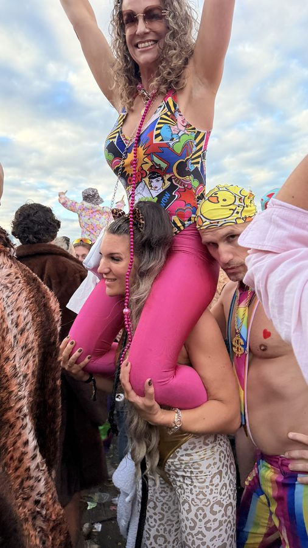
Op de schouders, armen omhoog, roze bodysuit.
Dit is wat Cheerio met mensen doet. Nouelle: noteer dit.
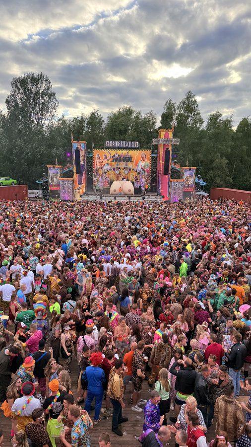
Het podium. De massa. Duizenden mensen.
Ze zongen allemaal mee. Eén persoon niet. Je weet wie.
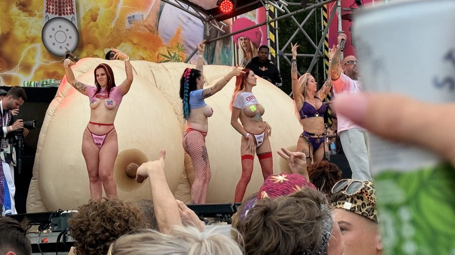
Het officiële Kamping Kitsch podium in volle glorie.
Subtiel was het niet. Cheerio ook niet. Dat is het punt.
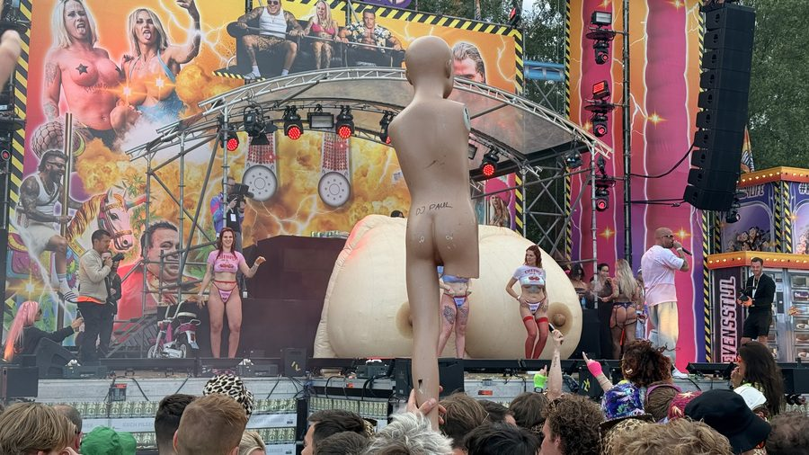
Opblaaspop met "DJ PAUL" erop, crowd surft mee.
Kamping Kitsch: waar alles kan en niets moet. Behalve Cheerio horen.
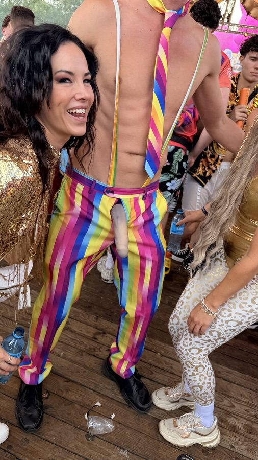
Martin (links, regenboogpak) en Nouelle (rechts, gouden top + leopard) bij het Erectie Detectie bord.
Martin: 10/10 enthousiasme. Nouelle: gezicht zegt genoeg. Cheerio speelde op dat moment.
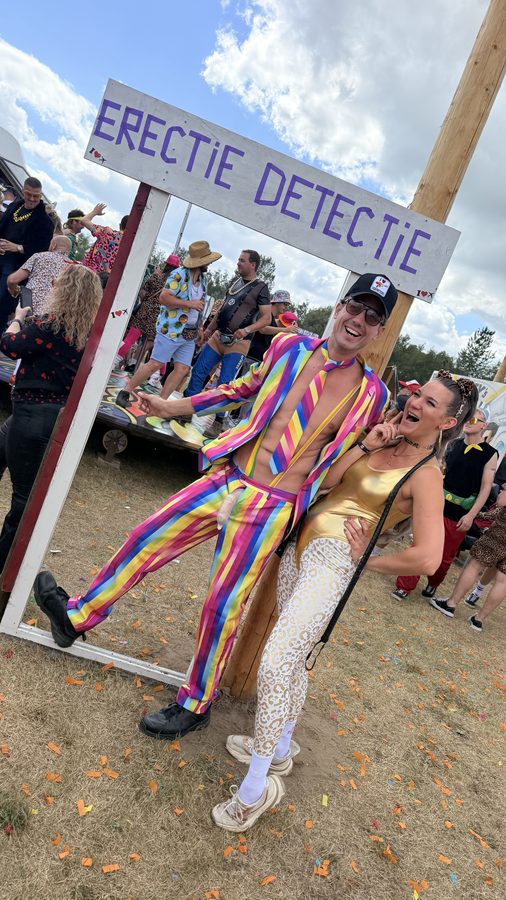
Tweede shot bij het bord. Martin straalt.
Nouelle lacht ook — want diep vanbinnen weet ze: Cheerio is een banger.
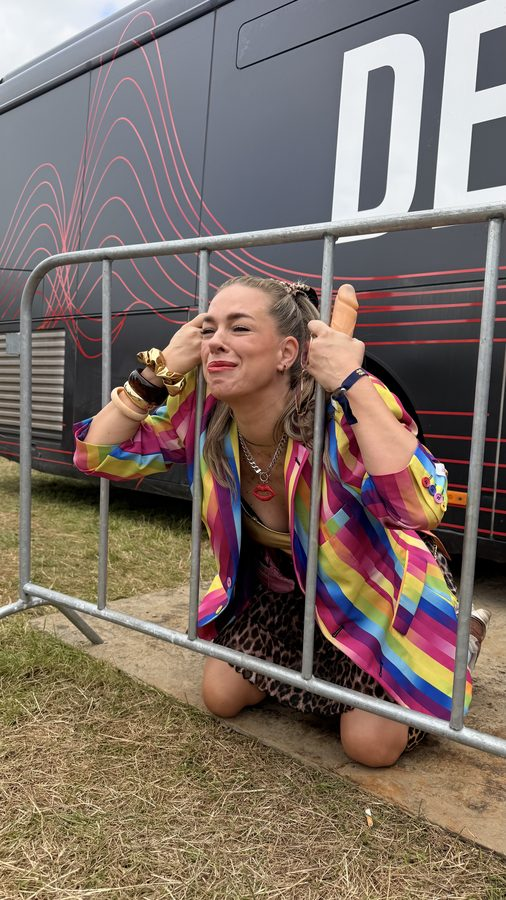
Onbekende festivalbezoeker tussen de hekken — ook zij had duidelijk genoeg van iets.
Nouelle was op dat moment waarschijnlijk bij de bar. Cheerio speelde.
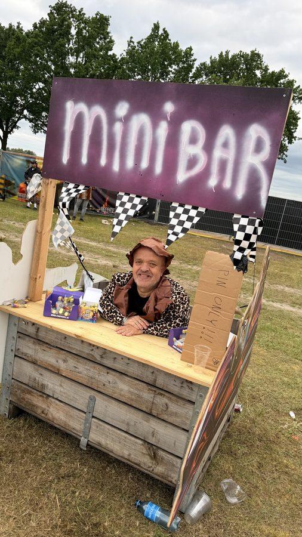
De Mini Bar. PIN ONLY. Leopardprint. Vrolijke eigenaar.
Hier hebben we bier gekocht. Cheerio speelde op de achtergrond.
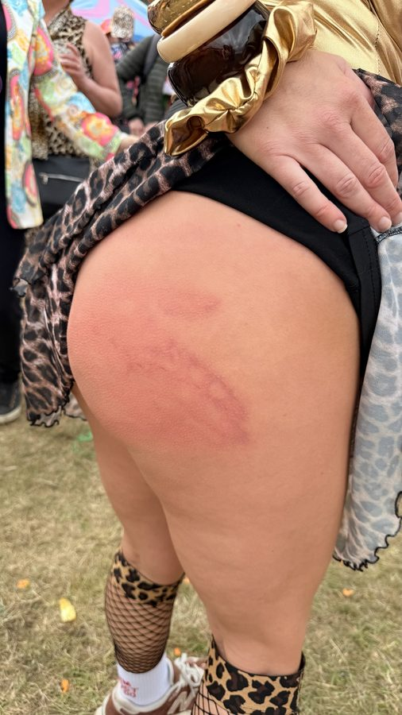
Het zweepje. De billen. De zweepstrepen.
Kamping Kitsch: wat hier gebeurt, blijft hier. Behalve op deze website.
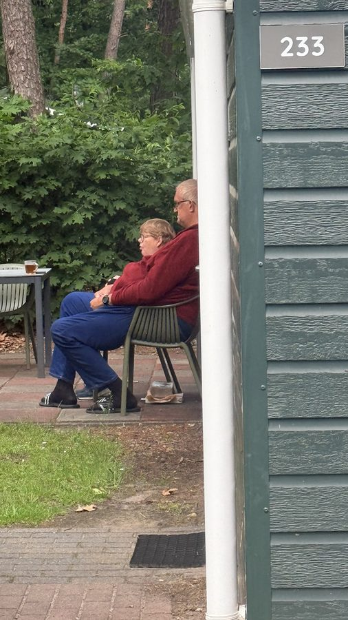
De buren op Landal De Peel. Huisje 233.
Rustig zittend terwijl wij binnen Cheerio draaiden. Ze hebben vast geklaagd.